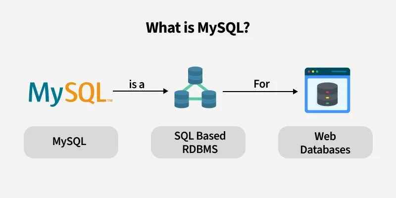

MySQL
 * MySQL is an open-source relational database management system (RDBMS) that uses Structured Query Language
(SQL) to manage data.
* Developed by MySQL AB and now owned by Oracle Corporation, it’s widely used due to its
reliability, speed, and ease of use. MySQL is a key component in many web applications, forming the backbone of
popular websites and services.
* It allows users to create, modify, and maintain databases, supporting operations like data insertion,
querying, updating, and deletion.
* Ideal for both small and large-scale applications, MySQL powers various types
of systems, from personal projects to complex enterprise environments.
* MySQL is a Relational Database Management System (RDBMS) software that provides many features, which are as
follows:
• Data Storage: Efficiently stores large amounts of data.
• Data Retrieval: Allows quick and easy access to data.
• Data Manipulation: Supports operations like inserting, updating, and deleting data.
• Data Security: Offers robust security features to protect data.
• Scalability: Can handle small to large applications with ease.